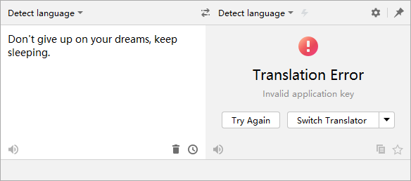
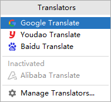
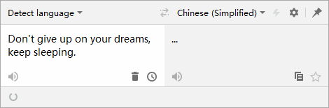
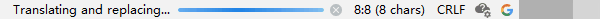
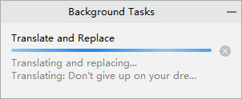
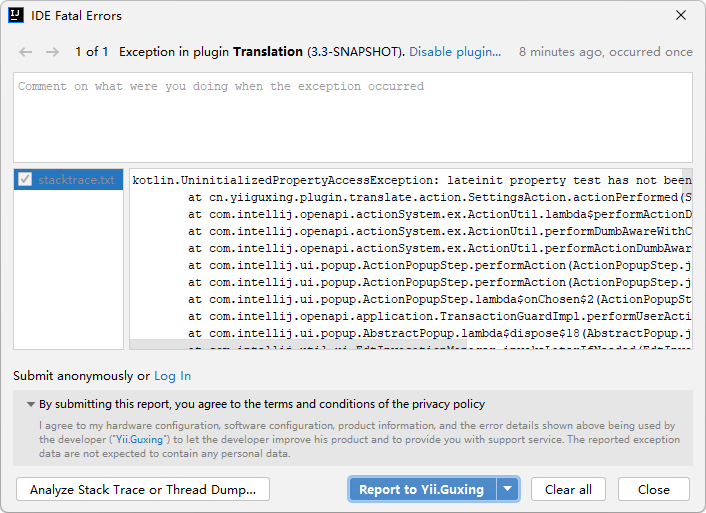

Version 3.3 (2022-03-25)
Welcome to Translation v3.3. There are many updates in this version that we hope you will like, some key highlights include:
- New Translation Error Panel - Display error messages more intuitively and provide some quick actions.
- New Translation Engines Menu - Show more content including inactive translation engines.
- Translation Status Indicator - Indicates the current translation status.
- Error reporting (Experimental) - Error reports can be submitted directly in the IDE.
Translation #
New Translation Error Panel #
We have redesigned the way to indicate translation errors, introduced a new translation error alert panel that displays error messages more visually and provides some quick actions.

New Translation Engines Menu #
The Translation Engines Menu now displays all translation engines, including inactive, and menu items for managing translation engines.

Translation Status Indicator #
A translation status indicator has been added to the status bar of the translation dialog, which will show when a translation is in progress.

At the same time, we also added a status indicator to the "Translate and Replace" action to show the progress status of the action.
In the IDE status bar：

In the background tasks：

Documentation translation #
The Rust language now supports documentation translation.
General #
Error Reporting (Experimental) #
Now, when an error occurs with the plugin, you can submit the error report directly on the error dialog. Error reports are submitted anonymously by default, Or you can click "Log in" on the panel and log in to your GitHub account, submit the error report through your GitHub account, so you can track the progress of the error on GitHub.
